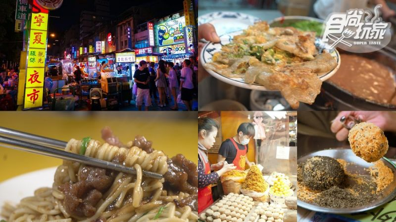

想要吃台灣道地傳統小吃，到台北寧夏夜市就對了！ 超多飄香超過一甲子的老字號，其中「劉芋仔」「豬肝榮仔」「圓環邊蚵仔煎」這3家更榮獲第一屆《臺北米其林指南》的「必比登推介」（Bib Gourmand）， 是許多本地人、觀光客都會慕名前往的最美味夜市，甚至連好萊塢巨星威爾史密斯跟國際大導李安都才剛來逛過。 但這次《食尚玩家》不只幫你統整好不敗名單，還只要500元就可以完封這9樣，快帶著這篇衝夜市啦！

首頁 第三頁 第四頁 心得